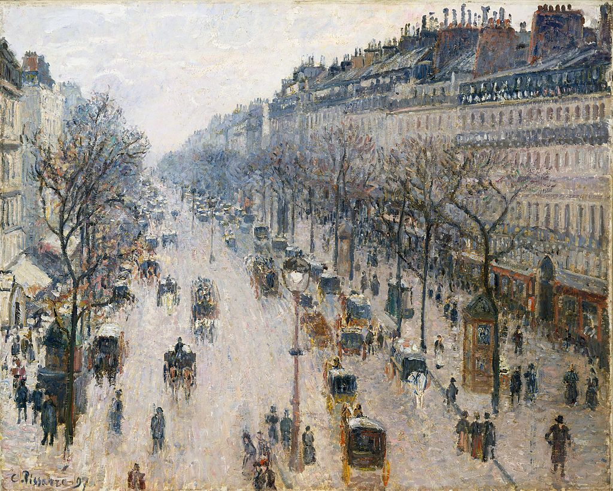

<head>
<meta charset="UTF-8" />
<meta name="keywords" content="drawing, painting" />
<meta name="description" content="drawings by Sunjy" />
<title>Sunjy</title>
<link rel="shortcut icon" type="image/x-icon" href="../../mImages/mCommon/favicon.ico" media="screen" />
<link rel="stylesheet" type="text/css" href="../../mCsses/mCommon/mCssA.css" />
<link rel="stylesheet" type="text/css" href="../../mCsses/mCommon/mCssB.css" />
<link rel="stylesheet" type="text/css" href="../../mCsses/mCommon/mCssC.css" />
<link rel="stylesheet" type="text/css" href="../../mCsses/mCommon/mCssD.css" />
<link rel="stylesheet" type="text/css" href="../../mCsses/mContent/mCssA.css" />
<link rel="stylesheet" type="text/css" href="../../mCsses/mContent/mCssB.css" />
<link rel="stylesheet" type="text/css" href="../../mCsses/mContent/mCssC.css" />
<link rel="stylesheet" type="text/css" href="../../mCsses/mContent/mCssD.css" />
</head>
<script type="text/javascript" src="../../mScripts/mContent/mContentAA.js" /></script>
<script type="text/javascript" src="../../mScripts/mContent/mContentAB.js" /></script>
<script type="text/javascript" src="../../mScripts/mContent/mContentAC.js" /></script>
<script type="text/javascript" src="../../mScripts/mContent/mContentAD.js" /></script>
<script type="text/javascript"></script> 
<script type="text/javascript">
document.write('<div class="mImgAbsolute"></div>');
/*
document.write('<p class="mFontSizeBColor" />From a white paper...</p>');
document.write('<table class="center"><tr><td>');
document.write('');
document.write('</td></tr></table>');
*/
</script>


<script type="text/javascript">
document.write('<p class="mFontSizeBColor" />The Boulevard Montmartre on a Winter Morning </p>');
document.write('<p class="mFontSizeSColor" />“The Boulevard Montmartre on a Winter Morning” by Camille Pissarro was painted after his six years in rural Éragny.<br><br>Pissarro marveled that he could “see down the whole length of the boulevards” with “almost a bird’ s-eye view of carriages, omnibuses, people, between big trees, big houses that have to be set straight.”<br><br>In his urban city landscapes, he emphasized order, proportion, and structure, while depicting dynamic movement.<br><br>Not through attention to fine details, but with less individually drawn figures, he focused on broad subjects in his portrayal of real life. His brushstrokes consist of short, loose, semi-thick strokes to enhance the idea of motion running through his work.<br><br>At first glance, the work looks blurry until the viewer studies the painting and sees the qualities of details he positions through his stylistic brushstrokes.<br></p>');
document.write('<table class="center" /><tr><td>');
document.write('<br>Pissarro marveled that he could “see down the whole length of the boulevards” with “almost a bird’ s-eye view of carriages, omnibuses, people, between big trees, big houses that have to be set straight.”<br><br>In his urban city landscapes, he emphasized order, proportion, and structure, while depicting dynamic movement.<br><br>Not through attention to fine details, but with less individually drawn figures, he focused on broad subjects in his portrayal of real life. His brushstrokes consist of short, loose, semi-thick strokes to enhance the idea of motion running through his work.<br><br>At first glance, the work looks blurry until the viewer studies the painting and sees the qualities of details he positions through his stylistic brushstrokes.<br>" />');
document.write('</td></tr></table>');
</script>


